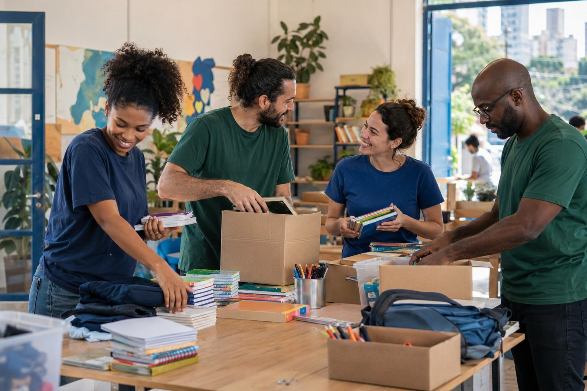

Segurança alimentar
Arrecadação e distribuição responsável de alimentos para famílias acompanhadas pela rede.
Solidariedade que vira oportunidade
Apoiamos famílias de São Paulo com educação, alimentação e uma rede de voluntários comprometidos.

Quem somos
A ONG Mãos que Transformam atua no apoio a comunidades em situação de vulnerabilidade por meio de projetos educacionais, campanhas de arrecadação e ações solidárias.
Nosso trabalho conecta quem deseja ajudar a iniciativas transparentes, locais e capazes de produzir mudanças duradouras.
Nossas frentes
Arrecadação e distribuição responsável de alimentos para famílias acompanhadas pela rede.
Reforço escolar, oficinas de leitura e acesso a materiais para crianças e adolescentes.
Formação de equipes para campanhas, eventos comunitários e atendimento às famílias.
Fale conosco
E-mail
contato@maosquetransformam.org
Telefone
(11) 99999-9999
Localização
São Paulo - SP